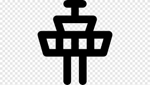

이력서
반갑습니다, 저는 이주형입니다.
3년차 웹풀스택 엔지니어로 일하고 있으며 문제해결을 통한 성장을 추구합니다.
끊임없는 배움과 시행착오를 통해 더 나은 코드를 구현하는게
개발자가 반드시 가져야할 태도라고 생각합니다.
협업과 공유를 통해 새로운 서로에게 도움이 되는 것을 좋아합니다.
직무이력👨🏻💻
Cufit
오픈라이더 
2019.03 ~ 현재
 오픈라이더 서비스 API 개발
오픈라이더 서비스 API 개발
2019.03 ~ 현재
Description.
오픈라이더 앱 서비스에서 사용하고있는 REST API 신규 개발 및 유지보수를 하고,기존 레거시 코드를 리팩토링하는 작업을 진행하고 있습니다.
상세내용
기술스택
Node.js, Express, Javascript
 오픈라이더 웹 포탈
오픈라이더 웹 포탈
2019.05 ~ 2019.07
Description.
오픈라이더 사용자들의 정보와 연동해서 웹에서 신규 서비스를 제공하기 위한 목적과Vue framework 적용 및 ORM 사용을 해보기 위한 실험적인 프로젝트입니다.
상세내용
기술스택
Node.js, Vue, Javascript, ORM(Sequelize), Webpack 2019 한강 자전거한바퀴 관제시스템
2019.07 ~ 2019.08Description.
2019 한강 자전거 한 바퀴 행사에서 현장 관제용으로 사용되는 시스템 보수상세내용
기술스택
Java, Mybatis, Html, Javascript, Socket.io
 OPEN API 시스템 구축
OPEN API 시스템 구축
2019.08 ~ 2019.09
Description.
데이터바우처 공급기업 등록을 위한 외부제공용 OPEN API 구축상세내용
기술스택
Grivitee, Elasticsearch, Zookeeper기존 API 코드 리팩토링
2019.10 ~ 2020.01Description.
기존 API 코드가 Javascript로 작성되어있어, 에러 디버깅이나 코드의 안정성 측면에서 문제가 있다고 판단되어 Typescript로 전면 변경할 계획을 했습니다.하지만 추후 일정이 생겨서 프로젝트 구축 및 샘플 API를 이관하는 단계까지만 진행하였습니다.